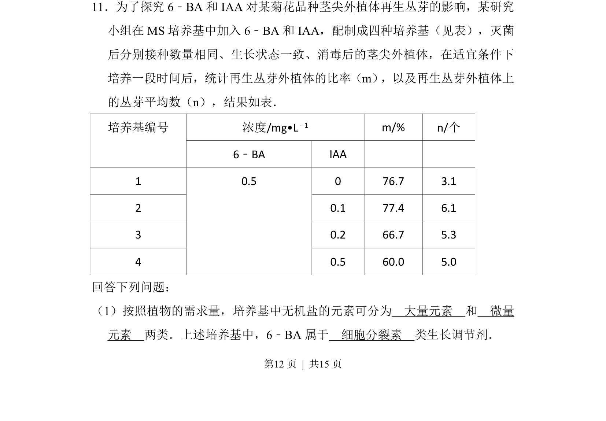
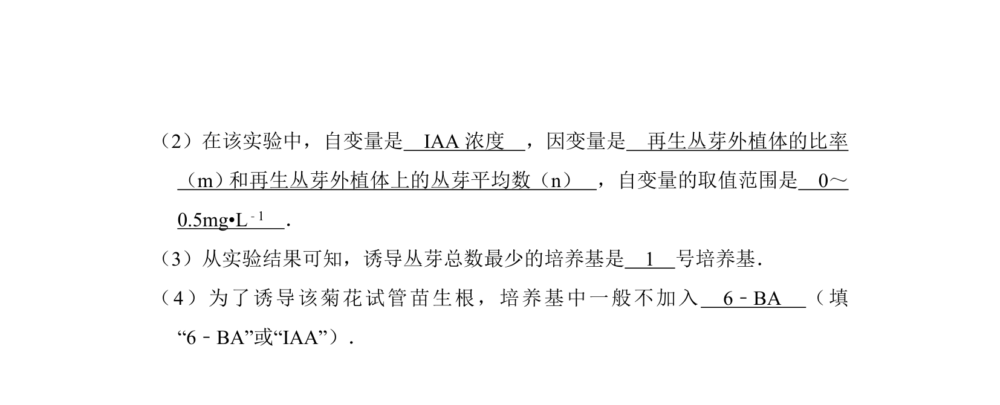
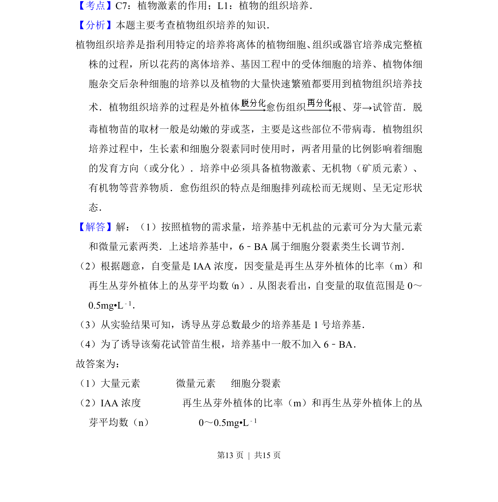
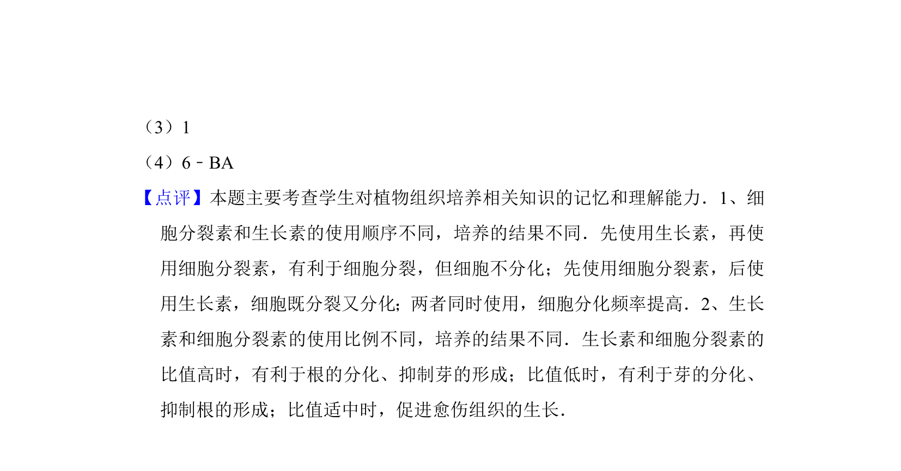

考点：大量元素 微量元素 植物生长调节剂 细胞分裂素


该题考查植物组织培养中培养基无机盐分类及植物生长调节剂6-BA的类别。


📄 原 PDF 第 12 页：
素材/真题/吉林/2008-2024·（吉林）生物高考真题/2012年高考生物试卷（新课标）（解析卷）.pdf
11．为了探究6﹣BA和IAA对某菊花品种茎尖外植体再生丛芽的影响，某研究 小组在MS培养基中加入6﹣BA和IAA，配制成四种培养基（见表），灭菌 后分别接种数量相同、生长状态一致、消毒后的茎尖外植体，在适宜条件下 培养一段时间后，统计再生丛芽外植体的比率（m） ，以及再生丛芽外植体上 的丛芽平均数（n），结果如表． 浓度/mg•L﹣1 m/% n/个培养基编号 6﹣BA IAA 1 0 76.7 3.1 2 0.1 77.4 6.1 3 0.2 66.7 5.3 4 0.5 0.5 60.0 5.0 回答下列问题： （1）按照植物的需求量，培养基中无机盐的元素可分为 大量元素 和 微量 元素 两类．上述培养基中，6﹣BA属于 细胞分裂素 类生长调节剂．